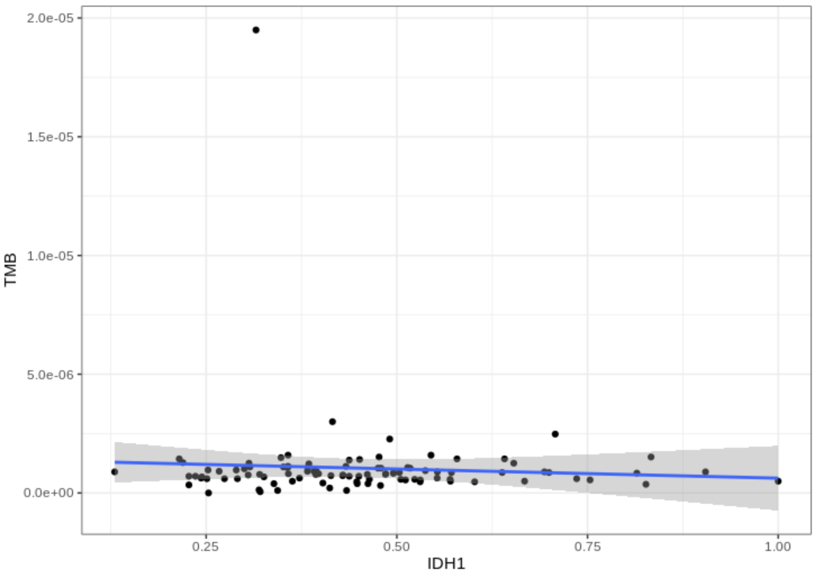
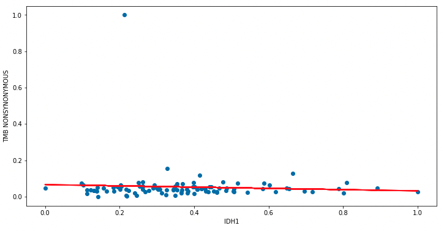

Introduction To Linear Regression
Prerequisites
- Request an account on the Tufts HPC Cluster
- Connect to the VPN
- Please be sure to have followed the instructions on the setup page
Linear Regression
In a regression model assesses the relationship between two quantitative variables by fitting a line to the data. Using our glioblastoma data, we will assess the relationship between IDH1 gene expression (a gene commonly mutated in this type of cancer) and TMB score (a measure of mutational burden). You can use a regression model to determine:
- how strong the relationship between these two variables is
- the value of the dependent variable given the independent variable
A linear model follows the following formula:
What do these terms mean?
- \(y\): dependent variable
- \(\beta_0\): intercept (where \(y\) = 0)
- \(\beta_1\): regression coefficient or slope
- \(X\): independent variable
- \(\epsilon\): error or our estimate (what is the variation in our regression coefficient)
This formula describes the best fit line for our data that tries to minimizes our error \(\epsilon\):

Pre-Processing
Open an R script by going to File > New File > R Script. Save this script using a descriptive name, like linear-model.R. In the script use the following code:
## Loading our packages
## Load the counts data
## Load the meta data
.libPaths(c("/cluster/tufts/hpc/tools/R/4.0.0"))
library(tidyverse)
library(caret)
counts <- read.csv(
file="data/gbm_cptac_2021/data_mrna_seq_fpkm.txt",
header = T,
sep = "\t")
meta <- read.csv(
file = "data/gbm_cptac_2021/data_clinical_sample.txt",
skip=4,
header = T,
sep = "\t"
)
Open a new notebook by going to File > New > Notebook. Save this script using a descriptive name, like linear-model.ipynb. In a code block enter:
## Import our libraries
## Import our data set
import pandas as pd
import numpy as np
from matplotlib import pyplot as plt
import statsmodels.api as sm
import statsmodels.formula.api as smf
from scipy import stats
import statsmodels.stats.api as sms
from statsmodels.compat import lzip
counts = pd.read_csv(
'data/gbm_cptac_2021/data_mrna_seq_fpkm.txt' ,
sep = '\t')
meta = pd.read_csv(
'data/gbm_cptac_2021/data_clinical_sample.txt' ,
sep = '\t',
skiprows=4)
Now we will need to do some data cleaning before we plug this into our model:
## Change the patient id column to match
## column names in the counts df
meta$PATIENT_ID = gsub("-",".",meta$PATIENT_ID)
## grab IDH1 gene expression
idh1 = counts %>%
filter(Hugo_Symbol == "IDH1") %>%
select(-Hugo_Symbol) %>%
t() %>%
as.data.frame() %>%
mutate(PATIENT_ID = rownames(.))
colnames(idh1) <- c("IDH1","PATIENT_ID")
## merge meta data and IDH1
## gene expression
merged <- merge(
meta,
idh1,
by="PATIENT_ID")
## Grab IDH1 row and transpose
## ensure that patient id is a column
## and that IDH1 is the column name
IDH1= counts.loc[counts["Hugo_Symbol"] == "IDH1",]
IDH1 = IDH1.T
IDH1["PATIENT_ID"] = IDH1.index
IDH1.columns = ["IDH1","PATIENT_ID"]
## Grab TMB score
## merge IDH1 gene expression and TMB score
## merging this way ensures data are organized
## by patient
TMB= meta[['PATIENT_ID','TMB_NONSYNONYMOUS']]
merged=pd.merge(IDH1,TMB,on="PATIENT_ID")
merged = merged.set_index('PATIENT_ID')
merged.head()
Normalize/Create the Model
These data, IDH1 gene expression and TMB score are on two different scales. To ensure a fair comparison of these variables we will normalize (or bring our data to a common scale) our data:
## create a normalization function
## apply this function to our data
## to get data on a similar scale
NormalizeData <- function(data){
normalized = (data - min(data)) / (max(data) - min(data))
return(normalized)
}
norm = as.data.frame(
apply(merged %>% select(IDH1,TMB_NONSYNONYMOUS), 2,NormalizeData)
)
## You might notice our data is on two
## drastically different scales
## We will normalize our data
def NormalizeData(data):
normalized = (data - np.min(data)) / (np.max(data) - np.min(data))
df = pd.DataFrame(normalized)
return normalized
norm = NormalizeData(merged)
Now we can fit our regression model!
## fit our linear regression model
model <- lm(TMB_NONSYNONYMOUS ~ IDH1, data = norm)
## let's plot our data
## with the predicted values
ggplot(norm, aes(x=IDH1, y=TMB_NONSYNONYMOUS)) +
geom_point() +
theme_bw() +
ylab("TMB") +
xlab("IDH1") +
geom_smooth(method=lm)

## fit our linear regression model
tmb = norm['TMB_NONSYNONYMOUS']
idh1 = norm['IDH1'].astype(float)
model = sm.OLS(tmb,idh1).fit()
## Let's plot our data
## along with the predictions from
## our model
plt.figure(figsize=(12, 6))
plt.plot(norm['IDH1'], norm['TMB_NONSYNONYMOUS'], 'o')
plt.plot(norm['IDH1'], model.predict(idh1), 'r', linewidth=2)
plt.xlabel('IDH1')
plt.ylabel('TMB NONSYNONYMOUS')
plt.show()

Model Results
To assess our model we will generate a summary of some important metrics:
summary(model)
Call:
lm(formula = TMB_NONSYNONYMOUS ~ IDH1, data = norm)
Residuals:
Min 1Q Median 3Q Max
-0.06145 -0.02361 -0.01212 0.00096 0.94101
Coefficients:
Estimate Std. Error t value Pr(>|t|)
(Intercept) 0.06631 0.02216 2.992 0.00351 **
IDH1 -0.03437 0.05362 -0.641 0.52305
---
Signif. codes: 0 ‘***’ 0.001 ‘**’ 0.01 ‘*’ 0.05 ‘.’ 0.1 ‘ ’ 1
Residual standard error: 0.09938 on 97 degrees of freedom
Multiple R-squared: 0.004218, Adjusted R-squared: -0.006048
F-statistic: 0.4109 on 1 and 97 DF, p-value: 0.523
model.summary()
OLS Regression Results
Dep. Variable: TMB_NONSYNONYMOUS R-squared: 0.004
Model: OLS Adj. R-squared: -0.006
Method: Least Squares F-statistic: 0.4109
Date: Fri, 02 Sep 2022 Prob (F-statistic): 0.523
Time: 09:38:56 Log-Likelihood: 89.110
No. Observations: 99 AIC: -174.2
Df Residuals: 97 BIC: -169.0
Df Model: 1
Covariance Type: nonrobust
coef std err t P>|t| [0.025 0.975]
Intercept 0.0663 0.022 2.992 0.004 0.022 0.110
IDH1 -0.0344 0.054 -0.641 0.523 -0.141 0.072
Omnibus: 202.245 Durbin-Watson: 2.072
Prob(Omnibus): 0.000 Jarque-Bera (JB): 28769.651
Skew: 8.846 Prob(JB): 0.00
Kurtosis: 84.618 Cond. No. 6.12
Let's cover what a few of these mean:
Estimate: the model's effect, so here we see that a one unit increase in IDH1 results in a 0.0344 decrease inStd. Error: standard error of our estimatet value: test stastic - the larger the statistic, the less likely this effect occured by chancePr(>|t|): pvalue that assesses the effect of IDH1 on TMB score if the null hypothesis of no effect were correctMultiple R-squared:: \(r^2\) value of model - how much of the TMB variability is explained by IDH1 - here it is 0.4%
coef: the model's effect, so here astd: standard error of our estimatet: test stastic - the larger the statistic, the less likely this effect occured by chanceP>|t|: pvalue that assesses the effect of IDH1 on TMB score if the null hypothesis of no effect were correctR-squared: \(r^2\) value of model - how much of the TMB variability is explained by IDH1 - here it is 0.4%
Recap
So what have we found? Well the model only explains 0.4% of our outcome variation and increased IDH1 expression seems to be associated with a minimal decrease in TMB. Additionally, our high p-value of 0.523 indicates that we should not reject the possibility that this effect was due to chance.
Assumptions
So we found that IDH1 gene expression is not a great feature to model an outcome of TMB score. However, what if you do get a low p-value, a good \(r^2\) value, and a sizeable effect - are you in the clear? Not so fast, a linear model is limited by assumptions in our data:
- The data is normally distributed
- Homogeneity in the variances (Homoscedacity)
- Independence of your observations
Testing Assumptions
Mathematically, we can assess Normality and Homoscedacity with the shapiro test and Breusch-Pagan test, respectively:
shapiro.test(norm$IDH1)
Shapiro-Wilk normality test
data: norm$IDH1
W = 0.95137, p-value = 0.001093
stats.shapiro(norm['IDH1'])
(0.9513656497001648, 0.0010935224127024412)
We note here a pvalue (highlighted) of less than 0.05 which indicates that our data deviates from a normal distribution. Now how about our homoscedacity?
lmtest::bptest(model)
studentized Breusch-Pagan test
data: model
BP = 0.72081, df = 1, p-value = 0.3959
names = ['Lagrange multiplier statistic', 'p-value',
'f-value', 'f p-value']
test = sms.het_breuschpagan(model.resid, model.model.exog)
lzip(names,test)
[('Lagrange multiplier statistic', 0.7208106123366453),
('p-value', 0.39587814229097884),
('f-value', 0.7114286333891047),
('f p-value', 0.4010451501525186)]
Here we see that our pvalue is well above 0.05 indicating there is not enough evidence to reject the null hypothesis that the variance of the residuals are constant - i.e. we do have Homogeneity in our variances.